MIT Solar Electric Vehicle Team: Nimbus
MIT’s SEVT is a student ran organization dedicated to designing and building solar powered cars from the ground up to compete in 1,500+ mile endurance races. Our car this year is an asymmetric catamaran style as that form factor lends itself for better aerodynamics given its reduced frontal area.

We took Nimbus to the Ford wind tunnel to test out its aerodynamics.
I joined the team for the full build cycle of the car affectionately dubbed Nimbus. As part of the mechanical team, I helped to design components of the braking system and rear suspension as well as run simulations and calculations to make sure our designs were safe. I also gained a fair amount of experience using mills, waterjets, welders, and programming CNC machines.

The top of the car comes off entirely to access all of its components. Here we're still assembling the front suspension and steering.
As an upperclassman on the team, I helped teach a lot of new members and underclassmen the basics of machining and design, and as the business lead for the team I helped to maintain relations with our sponsors and raised tens of thousands of dollars for the project.

I did a lot of work in designing the parking brake (to the left), which is basically just putting a lever arm and a locking/release mechanism on a hydraulic cylinder. I also worked on redesigning some of the geometry for the rear suspension. Originally we planned (and made) our rear suspension's L-arm out of two pieces of steel to be welded together (picture of half of it below). After having to actually machine the parts and learning first hand how terribly they were designed (in part by yours truly), I redesigned the connection point between the two parts such that it would suffice to make it from aluminum and to be easier to machine (the joint is pictured above).

Machining the back L-arm was a massive pain, but I learned a ton from it.
2.671: Measurement and Instrumentation
2.671 at MIT is all about measurement instruments and processing data. A major component of the class is a personal measurement and analysis project over the semester, for which I made a small gas powered cannon.
Overview of my testing setup.
I wanted to see the effect that the ignition point placement would have on the internal combustion characteristics of my cannon. I made it a simple setup with a rupture disc to contain the pressure until some roughly set release point, and I tested just 3 ignition points at the two ends and middle of the chamber. I purposely made the chamber long and narrow to try and accentuate any effect that the placement would have.
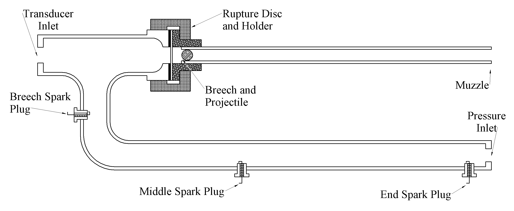Cross section of my mini cannon.
The left most graph shows a sample of the pressure transducer's output over time, the middle the mean times to reach peak chamber pressure, and the right a quadratic fit of the data. I hypothesized that the fastest peak pressure time would be seen at the centroid of the chamber since there would be two flame fronts propagating an equal, minimized distance if they originated at this point. It's interesting to note that the mean peak pressure time was NOT in the centroid of the chamber but actually shifted from it, possibly indicating some more significant reliance on the chamber's morphology than simply finding its centroid (i.e. that the bend/elbow in the chamber affected the flame propagation speed).

I also took peak pressure but didn't wind up using it since the wait periods for the chamber to achieve a homogeneous enough mixture for combustion varied significantly for the end sparkplug position (screwing up my pressure readings somewhat). I took the muzzle velocity too but didn't use it since it appeared to be corrupted by a lack of light in the test environment (it works through reading light changes) and/or by pieces of the rupture disc flying through it. The really interesting result from this is that I didn't receive a visit from the authorities while firing off a cannon >30 times in the middle of Boston.
BD Medical Automated Bag Tester
The first portion of my internship at BD Medical consisted of testing a lot of small reservoir bags for their new wearable insulin delivery device. The whole process of testing these bags was time consuming and inefficient, so in the 50 seconds between each test I slowly designed a robotic arm and fixture to automate the testing.

The contraption sitting next to the CTS it was supposed to connect to
After doing some testing and revisions of the structural components, I arrived at the design shown to the right and below. It has two lead screws to drive the lift and tray, a rack and pinion for the arm, and two air cylinders for clamping and advancing the bag into the CTS instrument for pressure decay leak testing. I also put together the control/power circuitry and programmed it with an Arduino.
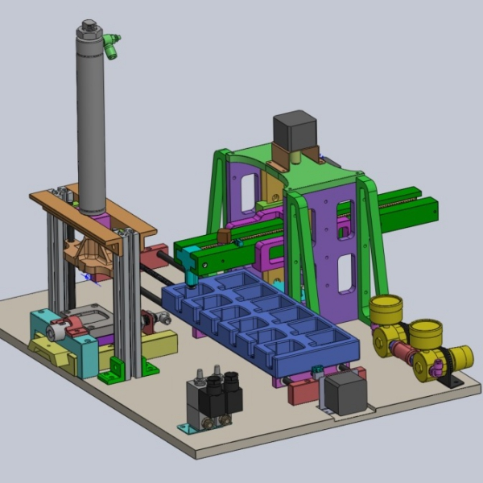Lil SolidWorks model of the assembly
After completing the project I put together a report and further designs for a faster and more flexible tester for their operations team to follow up on. I completely failed to take into account how underpowered my motors were when I ordered them (I did some back of the napkin calculations for a rough size but didn't account for how much friction there would be in the system). I also chose to actuate the whole thing with stepper motors and lead screws, even though it would have been 100x faster and more precise to slap in some simple pnuematic cylinders, all because I did not clarify with my boss what my budget actually was for the project (and a cheap stepper + threaded rod is 10x less expensive than a decent pnuematic cylinder).
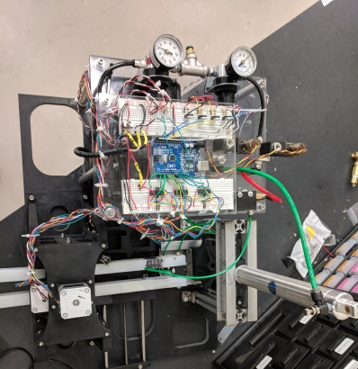Overview of the messy breadboards and solenoids
The control circuitry and programming for it was pretty simple, but it was the first time I really had to do anything meaningful with stepper motors. It was also a really good refresher for some of the things I previously picked up in my circuits and electronics classes.
MIT 2.007: Moonshot
2.007 is the MIT class with complementary robotics competition that spawned FIRST Robotics. The 2019 competition, Moonshot, mainly involved traveling down a series of ramps, picking up rocks, and getting back up to the starting position (along with some other possible scoring objectives along the way).


My robot was designed to get down the ramp, pick up a handful of rocks in a bin, and then lift up that bin and shoot it out into the starting area for the points. It was also made to pull a multiplier (a 6lb weight). I learned a ton about design throughout the class while iterating and testing different ideas and concepts for the bot.
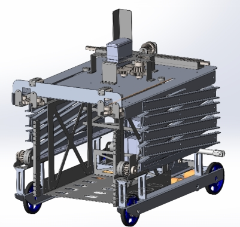Solidworks model of the bot
Nice shot of the old transmission
I'll admit, I got pretty ambitious with how many of the scoring elements I wanted to take a crack at. I quickly realized that if I wanted to get a faster robot I had to give my drive train at least half of my motors. That only left me three motors to yank a 6lb weight, collect a bunch of rocks, and raise them up a few feet (and all in under two minutes or so). My solution? I made a transmission with the remainder of my motors. It was pnuematically actuated, included some handmade dog gears, and was strong enough to take a finger.
I also had a few cracks at making a proper chassis. The first attempt I failed to take into account the fact that thin sheet aluminum distorts really easily when bent, rendering it completely dimensionally inaccurate. I finally landed on a good 3 part chassis, a few iterations in.


I also needed a means of collecting rocks that didn't require additional motors, so laser cut this little ratchet assembly and tied my drive train to the collector. The ratchet was so that the collector would only operate when I was driving forward and not fling the rocks back out when I went backwards.
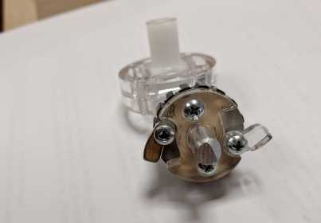Ratcheting mechanism on the element intake
All in all, this robot didn't actually come together by competition day. I got very ambitious and tried to do a lot of different relatively complicated things rather than just focusing on moving rocks from point A to point B. But I still got to learn a lot about design and manufacturing, and had a lot of fun building this.
Musashi Auto Parts: Rolling Machine Shop
The floor of Musashi Auto Parts-MI is fairly large, and so whenever a new machine or production line is put in it’s a pain since all of the tools and equipment are housed on the opposite end of the plant from the new lines. Hence, I was tasked with making a cart that contained all of the goodies that might be needed in machine installation.

I helped design the cart and presented the concept to the other engineers in the department with a fellow intern (Joanna Robinson). Another intern (Michael Campbell) helped me with welding the frame while I made more of the pieces/components. Aside from that I fabricated, machined, welded, and wired the rest of the cart. It should save the engineers doing the line installations tens of hours per week collectively just by having all of the equipment and parts in one place. The cart had a bunch of fanciful features, including a fold-out work surface, extension ports, overhead lights, a drill press, a vice, and a grinder.


The plan was to also have the sides and center of the cart filled with electronically locked tool boxes. Unfortunately, the lead time on these tool boxes meant that I could not finish the project in time to go back to school. The touch pad on the center post of the cart was supposed to control power to all of the machines and the locks on all of the tool storage locations so that none of the more curious line workers would get curious and lose a finger or walk off with a new angle grinder.
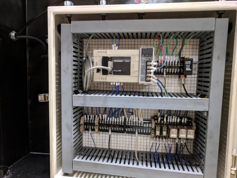My cute lil junction box
The cart itself is an absolute unit, designed and handmade (mostly) by yours truly. The top work surface is a half inch thick slab of AR500 plate topped off with a layer of stainless steel sheet. The rest of the cart is all steel tubing and sheet metal thick enough to make an industrial sheet metal brake cry a little.
I've personally accidentally dropped it from a crane only to break the already battle hardened floor while trying to paint the underside. The electronics for the project where pretty simple (just a PLC and a handful of relays), but I still got to learn a lot about industrial electronics and wiring.
You could say I left my mark on the project
Musashi Auto Parts: Gear Subassembly Leak Testing
The Musashi Auto Parts (MAP) plant in Battle Creek, MI, manufactures components for and assembles automotive differentials. It was super cool since the side gears for the differentials were made in house. Giant lengths of steel billet and the actual housings went in one door and out of the other came finished differentials.

A nice leaker
The problem that MAP had was that its side gears were leaking. They are fitted with a cap before assembly that's supposed to ensure that differential fluid does not leak out of the assembly. But a handful would leak anyway, so they needed a means of testing them in production. Ergo, my summer project.
 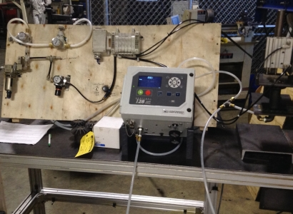
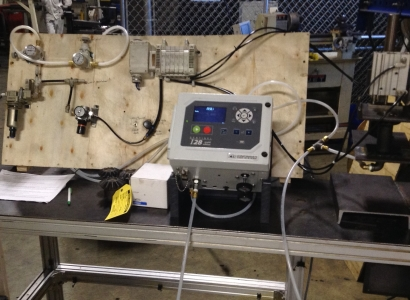
With the supervision of one of the lead engineers I made an apparatus that would allow me to take factory air, stabilize it to some degree, run it through a machine to measure its flow rate, and lead all of that to a clamp that would seal the gear and flow analyzer together. The setup also allowed me to fill the gears up with pressurized water for a fluid loss test.

Schematic of the system
The data I collected was sent to various engineering and company leads and used in assigning a new leak rate test for the gears so that the company would not output as many leaking gear assemblies/differentials.
Piston Valve Hybrid Cannon
Are you having trouble with your long game? Do you just really need to be able to send a golf ball 550+ yards in a single stroke? Then I have just the thing for you!

Almost finished
The piston valve hybrid cannon was a concept I saw on YouTube a few years ago and always wanted to build. It replaces the rupture disc normally used in ‘hybrid’ cannons with a piston to more finely tune the opening pressure of the chamber. I haven’t actually gotten a chance to mess around with it too much but its theoretical maximum velocity is around 1500ft/s with a standard golf ball.
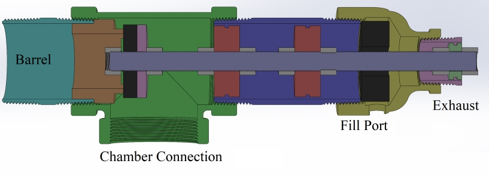Cross section of the valve
The piston is pretty simple and works off of a pressure differential between the rear pilot area and the chamber. Since there's a large difference in exposed areas between these two sections, it becomes possible to control the opening of the valve with a much smaller volume and pressure.

Ballistics calcs curtesy of HGDT
I used this program called HGDT (hybrid gun design tool) to roghly spec out the dimensions of my chamber and barrel and get rough estimates of the muzzle velocity. For an AP physics project I also put together my own model to estimate the muzzle velocity and energy that was pretty close to HGDT's output and could be tuned once I had actual data from my cannon.
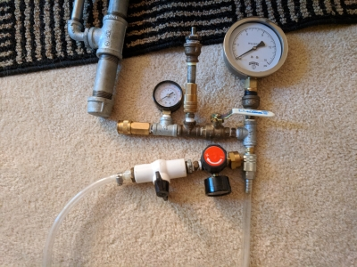Manometric metering system
The metering system uses the chamber’s pressure to measure how much fuel and air are present and the ignition system is based on a remote switch and a DC step up module.

Melting Metal Burners
For a while I have been messing around with metal casting. I had made a furnace that ran off propane but it was somewhat fragile and the cost of propane was getting to be too much for my budget. Another energy source I looked into for a while was used motor oil, which, thanks to a well-placed ad on craigslist, I had obtained 50 gallons of.
 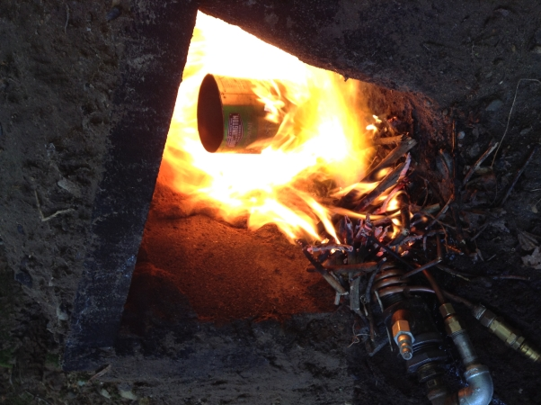
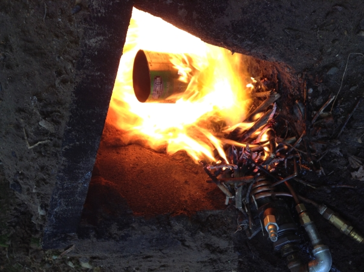
I initially tried dripping the oil into an airstream to atomize it, but I couldn’t get that to work. At some point I tried vaporizing the oil and pressurizing it but that didn’t work at all. After that I tried pressurizing the oil and just combining the oil and air lines in a junction right before the nozzle, which turned out to work for the most part. For the furnace itself I basically dug a hole in the ground and lined it with cinder blocks and bricks that I had lying around. The largest melt I attempted in my makeshift pit was about 10lbs of aluminum, though the entire apparatus supporting the pressurized oil and air rig is very cumbersome.
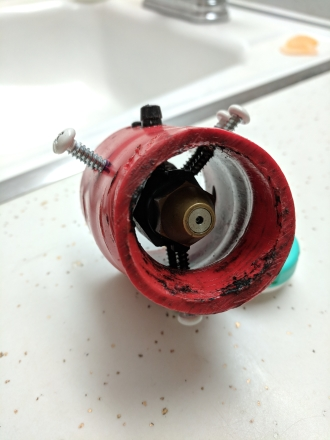My attempt at a siphon nozzle seated in a prototype holder.
I have played around with siphon nozzles some, the only problem is that they still require a high volume of compressed air, which limited the mobility of my setup/made the whole thing more cumbersome to setup.


Delavan nozzles are a type of pumped oil nozzle, where the oil is atomized not directly through interaction with pressurized air but by its own centrifugal forces as it's forced through the nozzle. This frees me from having to hook up a large compressed air source, which it pretty nice. The only problem is that the massive amount of oil I obtained came from these amateur stock car racers who slopped in all sorts of additives into an already high viscocity oil. The resulting sludge only managed to clog my poor nozzle.
First forge runnin' on propane
In my quest to make a cheaper (propane is not cheap when you have no income) and easier to use (less than 1 hour set up time) furnace, I experimented with resistance forges. I basically stuck an electric stove’s heater with a steel shell into a pile of perlite and contained the whole thing in a cardboard box. It’s honestly amazing that the perlite was a good enough insulator to keep the box from catching on fire, even though the chamber reached somewhere around 1600F

Resistance forge
Team Impetus Presents: H2Ouse
Our logo
Me and my friend James George entered and competed as finalists in the international Conrad Spirit of Innovation Challenge in 2016-2017 with our project “H2Ouse”. H2Ouse (which we couldn’t really figure out how to pronounce, but we made a pretty cool logo for) is a combination greenhouse/mini desalination plant using a fairly novel renewable fuel source. When we looked at areas of the world experiencing water stress we noticed two things: that a majority of these nations bordered some body of salt water and that a significant portion of the water draws for a lot of these countries was going towards agricultural irrigation.
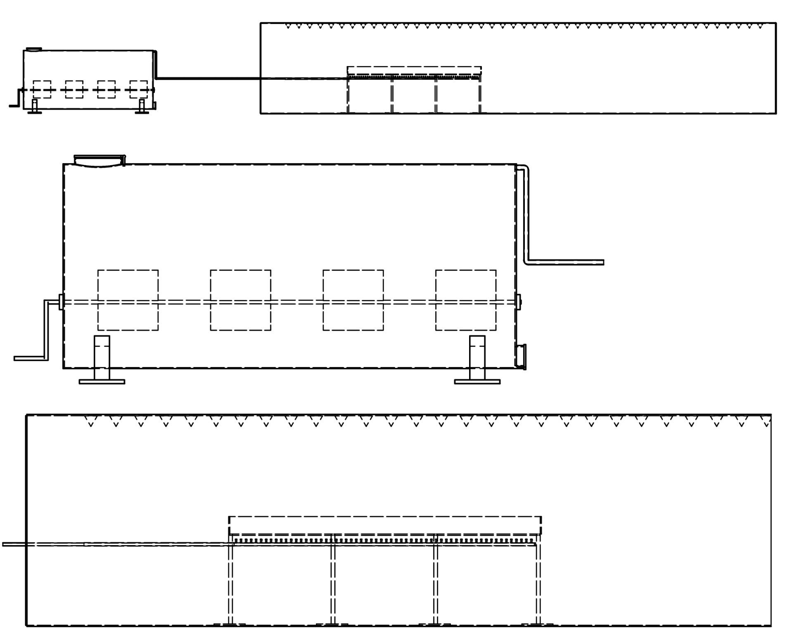Blueprint of our thingy
H2Ouse consists of two main parts, the first is a large fermentation tank where people can load organic waste and was meant to provide fuel to the greenhouse portion of H2Ouse, which would use it to desalinate sea water for plant irrigation. The actual presentation we gave was performed in front of a panel of professional judges and a crowd of overachieving students from all over the world and was broadcast on TV. This by far was the most terrifying thing I had done up until that point, but it was still pretty fun.
Our mock up for our presentation
VEX: Starstruck
I have participated in VEX robotics throughout high school with the Battle Creek Area Math and Science Center team, and in 2016-2017 I was the captain. The robot that year consisted of a normal 4 wheel base, a 4 bar lift, and a large claw-type gripper to manipulate and lift game elements. The goal of the game that year was to take these large, oddly shaped stars and squishy cubes and fling them over a fence to the opponents’ side of the mat. I used Inventor to make diagrams and sketches of the robot in an attempt to be able to readily delegate work to other team members.
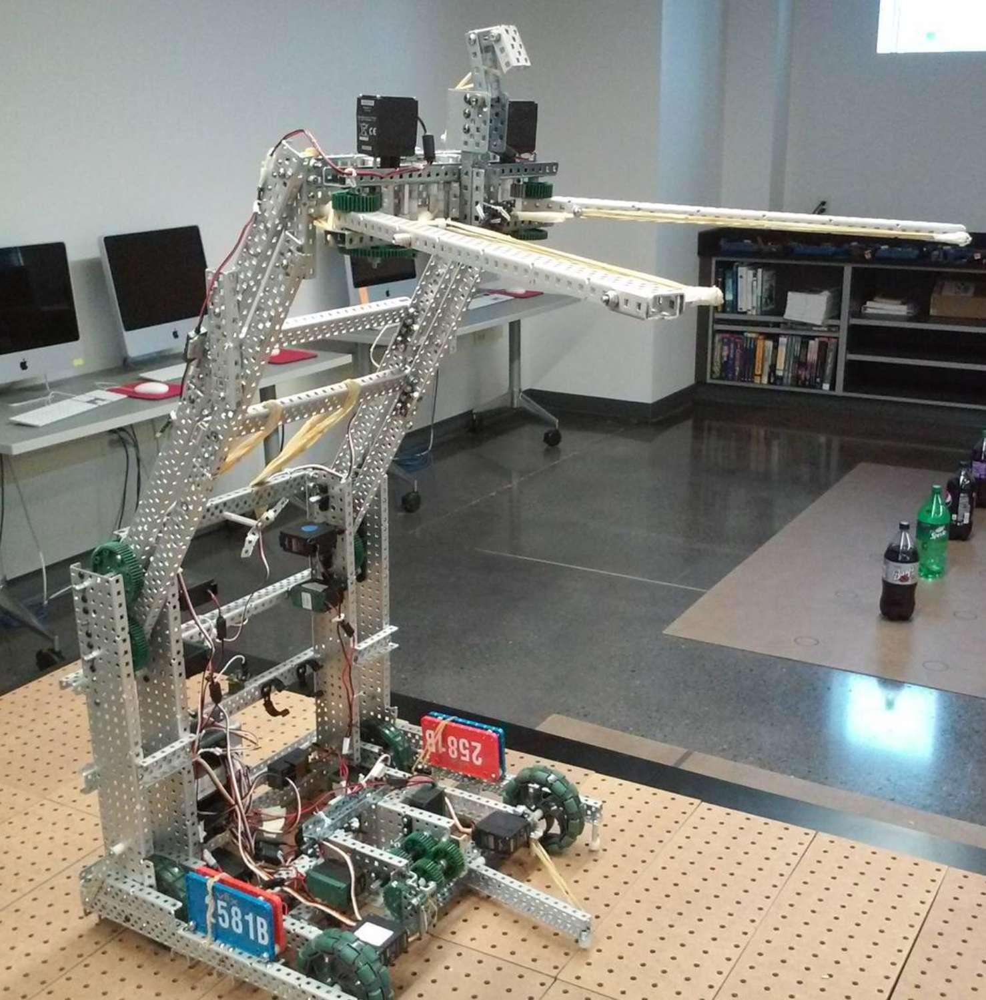Our robot standing up
We didn’t make it terribly far into the competition but we were able to pretty handedly manipulate a lot of game elements simultaneously and quickly (we just couldn’t lift our robot up for the extra points).

Lil iso view of our cadded robot
Burst Disc Hybrid Cannon
My dad made one of those traditional PVC and hair spray ‘spud guns’ when I was little and for whatever reason it really captivated me. So throughout elementary and middle school I messed around with making compressed air cannons and such things. The burst disc hybrid cannon was like my introduction to more serious oddball projectile lobbing.
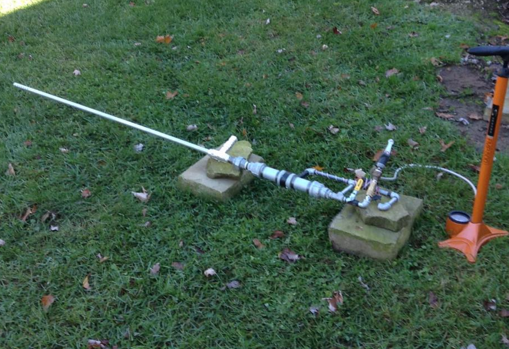Cannon setup with the long, ported barrel
With the disc and butane/air mix a fairly precise chamber pressure can be achieved as well as predictable velocities/muzzle energies (with a marble the muzzle velocity tends to top out at around 1800ft/s).
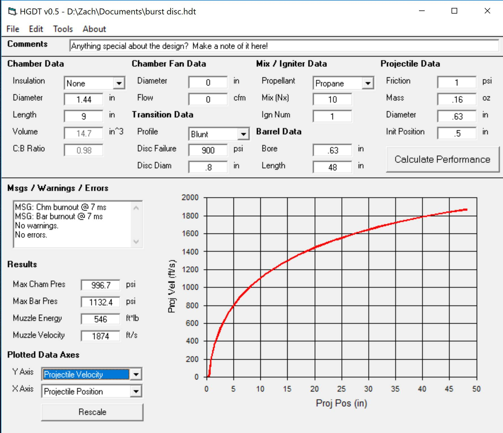Another HGDT output
Smaller Projects
Enjoy some of the random things I threw together.
MIT's 2.810 (Manufacturing Systems and Processes) has a lab/competition component where teams design and build a set of 6 RC cars. Since we were Team A, we became the A Team.


Every man, woman, and man-child should have their own personal flamethrower.
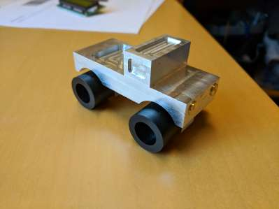For a mini class on subtractive manufacturing processes, I machined this little toy truck.
MIT has some excellent locales for the dumpster divers out there. After a year of collecting some really terrible sticks of RAM out of ancient computers, I tried my hand at recovering the gold plating from the contact pins. My end capture was pretty pathetic but I still have the actual sticks left to ash and process.

I ripped open a camera and removed its internal filters to make it a full spectrum camera. I'm still fudging around with the post processing to make the pictures not look like trash but its getting there.

What do you get when you mix a microwave and a free afternoon?
Nearly electrocuting yourself.

I've taken some dives into furniture making, that said my table was made more to survive a nuclear blast than coffee cups. The rightmost picture is probably the coolest, it turns out that if you saturate a piece of wood with hot steam you can bend it to whatever shape you want!